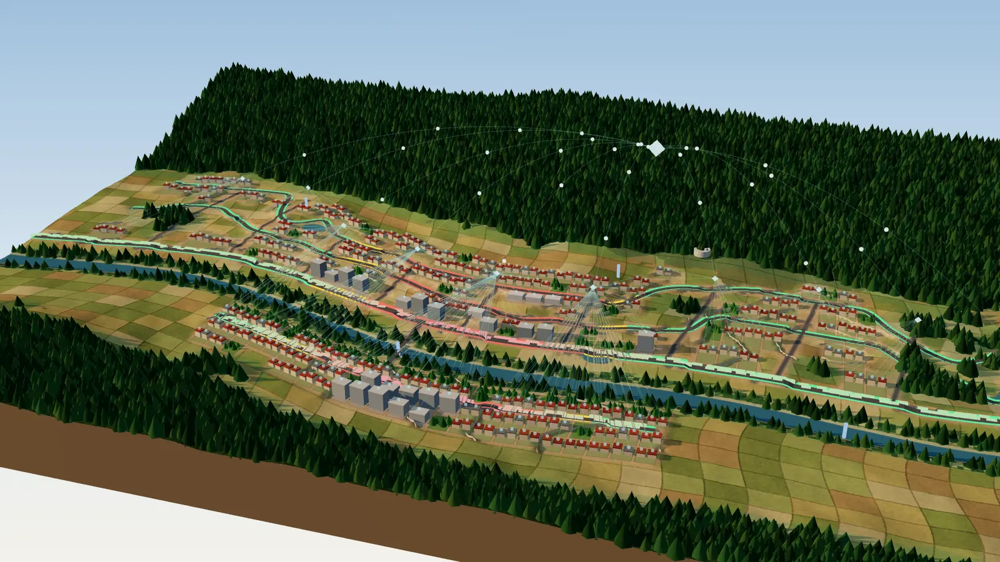

AI Monitoring and Analytics
Machine learning turns streams of sensor, satellite and weather data into an understanding of how the city is behaving now and what is likely next.

Loading the city model
Simulated dataWhat this stage does
Models combine IoT readings, satellite observations, weather data and historical records to track urban heat, air quality, traffic congestion and energy demand, flag abnormal structural behaviour and forecast conditions hours ahead.
- Stage
- 5 of 6
- Status in my work
- Developing
Inputs
- IoT sensor streams
- Satellite observations (heat, vegetation)
- Weather and rainfall data
- Historical records
Outputs
- Urban heat and air-quality maps
- Congestion and demand forecasts
- Anomaly alerts for structures
- Early-warning signals
How this connects to my work
My machine-learning work so far is Random Forest land-cover classification and remote-sensing analysis in Google Earth Engine. Applying GeoAI to city monitoring is a research goal.